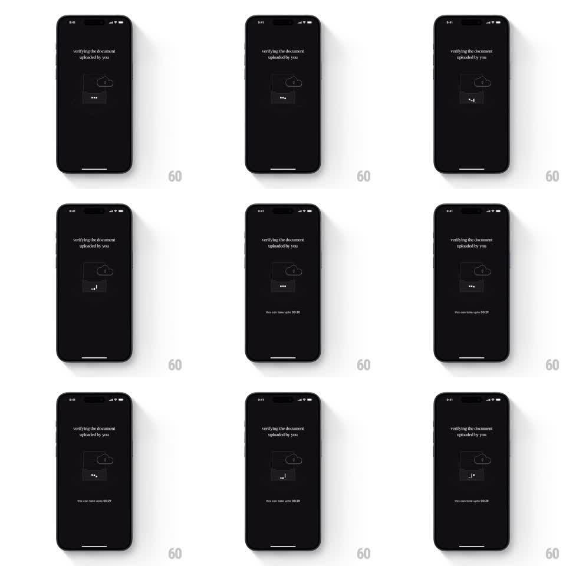

Media
Frame-by-frame

Rebuild this animation 1:1: CRED's document verification loader - a near-black screen with "verifying the document uploaded by you", an isometric line-art animation of a document uploading to a cloud with a cycling ellipsis, and a ticking countdown timer ("this can take upto 00:30") at the bottom.

Rebuild this animation 1:1: CRED's document verification loader - a near-black screen with "verifying the document uploaded by you", an isometric line-art animation of a document uploading to a cloud with a cycling ellipsis, and a ticking countdown timer ("this can take upto 00:30") at the bottom.
## Integration
Integration: stack-agnostic spec - springs given as stiffness/damping, timed motions as duration + curve; map every value to your framework and animation library of choice.
## Scene
Dark charcoal screen. Top-center serif copy: "verifying the document uploaded by you". Center: an isometric line-art scene - a document/card shape with a cloud above it and an upload arrow; beneath it a row of dots (ellipsis loader). Bottom center: small copy "this can take upto 00:30" counting down by seconds.
## Motion spec
Pattern: isometric line-art upload loop with countdown.
- The document floats with a slow isometric bob (translateY +/-3pt, 2.5s sine, preserve the iso projection).
- The upload arrow travels from the document to the cloud (translateY 24pt -> 0, 800ms ease-in-out), fades, and repeats.
- The cloud pulses faintly as each arrow arrives (scale 1 -> 1.04 -> 1, 200ms).
- The ellipsis dots cycle: each dot fades in sequence (200ms apart, opacity 0.2 -> 1), holds, all reset - a classic typing indicator rhythm.
- The countdown ticks once per second (00:30 -> 00:00) with a plain digit change, no roll.
- Line-art edges shimmer subtly (a faint highlight travels the outline every 4s).
## Calibration
- Everything is thin gray line art on near-black - no fills, no color.
- The countdown is steady and honest; it never pauses or jumps.
## Reduced motion
Static line art with a plain "verifying..." text indicator; countdown still ticks.
## Don't miss
- The serif headline is quiet and centered - this is a waiting screen, not a celebration.
- The ellipsis sits under the illustration, separate from the countdown line.